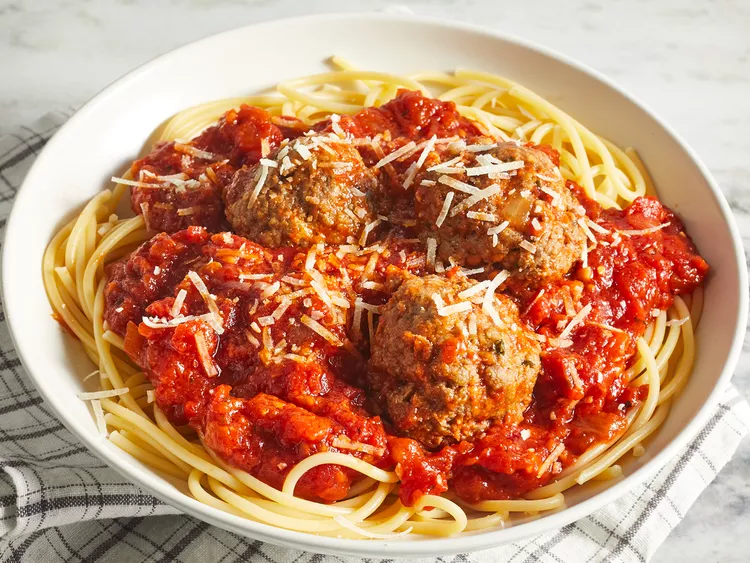

Spaghetti

This is an Italian-style pasta sauce with homemade meatballs that's cooked slowly over low heat for an intense tomato flavor.
It's easy to make the spaghetti sauce ahead of time; gently reheat and add meatballs 30 minutes before you're ready to serve with your favorite pasta.
Ingredients:
- Spaghetti noodles: 1 package. (8 ounce)
- Ground beef: 1 pound lean ground beef.
- Spaghetti sauce: 1 jar of spaghetti sauce. (16 ounce)
- Butter: 1/2 cup butter.
- Cream cheese: 1 package of cream cheese. (8 ounce)
- Sour cream: 1/4 cup of sour cream.
- Cheese: 1 package of shredded Cheddar cheese. (8 ounce)
Steps:
- Preheat the oven to 350 degrees F.
- Bring a large pot of lightly salted water to a boil. Cook spaghetti in boiling water until cooked through but firm to the bite, about 12 minutes. Drain.
- Heat a large skillet over medium-high heat. Cook and stir beef in the hot skillet until browned and crumbly, 5 to 7 minutes; drain and discard grease. Transfer to a bowl and mix in spaghetti sauce.
- Place 1/2 of the butter slices into the bottom of a 9x13-inch casserole dish. Spread 1/2 of the spaghetti into the dish.
- Mix cottage cheese, cream cheese, and sour cream together in a bowl; spread mixture over spaghetti. Cover with remaining spaghetti and top with remaining slices of butter.
- Pour ground beef mixture over spaghetti and spread in an even layer.
- Bake in the preheated oven for 30 minutes. Spread Cheddar cheese on top and continue baking until cheese has melted and is lightly browned, about 15 minutes more.